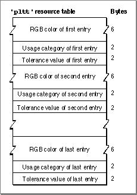

Legacy Document
Important: The information in this document is obsolete and should not be used for new development.
Important: The information in this document is obsolete and should not be used for new development.


The Palette Resource
The palette resource contains the color values and the usage and tolerance constants; in effect, it is a series ofColorInfostructures without the private fields. The Palette Manager adds its private fields both to the header and to eachColorInfostructure when it creates a palette structure from the'pltt'resource. The format of a palette resource is shown in Figure 1-1.Figure 1-1 Format of a palette resource
